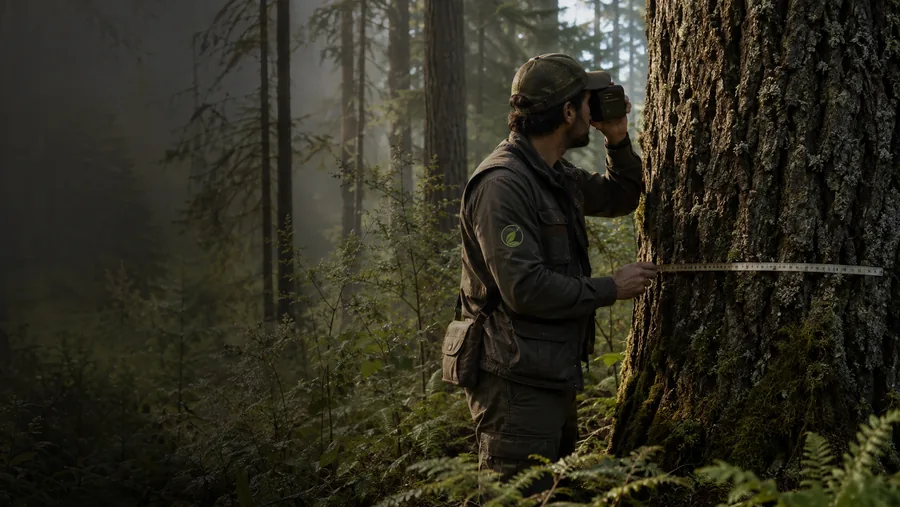

Esta guía práctica explica paso a paso cómo transformar un diagnóstico predial en una planificación predial forestal usable por propietarios y equipos técnicos: cómo fijar objetivos, dibujar unidades de manejo en cartografía, priorizar actividades del plan de manejo, contemplar permisos sectoriales y diseñar un sistema de seguimiento y registro que permita evaluar resultados.
En resumen
- Un diagnóstico predial bien estructurado es la base para definir objetivos específicos y unidades de manejo que facilitan la ejecución.
- La cartografía por unidades de manejo permite priorizar intervenciones y estimar costos con mayor precisión.
- Verifique permisos y requisitos sectoriales con CONAF antes de ejecutar intervenciones en bosque nativo o áreas protegidas.
- El plan de manejo debe incluir un programa temporal, presupuesto, indicadores de seguimiento y responsabilidades claras.
- Monitoreo sencillo y registros georreferenciados son clave para ajustar acciones y justificar decisiones frente a terceros.
1. 1) Interpretar el diagnóstico predial y definir objetivos
Revise el diagnóstico predial y extraiga los elementos que condicionan la planificación predial forestal: estructura de rodales, estado fitosanitario, suelos, fuentes de agua, accesos, conflictos de uso y valores de conservación. Con el propietario y el equipo técnico establezca objetivos claros y medibles —por ejemplo, aumentar productividad en un sector, proteger fragmentos de bosque nativo, reducir riesgo de incendios o recuperar áreas degradadas— y ordénelos por prioridad y factibilidad.
- Objetivo estratégico: meta a 10–20 años (ej. aumentar el volumen cosechable).
- Objetivos tácticos: metas a 1–5 años (ej. control de plagas en rodales A y B).
- Objetivos operativos: acciones concretas y medibles (ej. construir 2 km de cortafuegos antes de la próxima temporada seca).
Use estos objetivos para guiar la selección de unidades de manejo y actividades del plan de manejo.
Punto clave
interpretar-diagnostico
2. 2) Del diagnóstico a unidades de manejo y cartografía
Transforme la información del diagnóstico en una cartografía estable de unidades de manejo: polígonos que agrupen características homogéneas (especie dominante, edad, condición sanitaria, pendiente, acceso y valor de conservación). Esta cartografía es la columna vertebral de la planificación predial forestal y permite calcular áreas, volúmenes estimados y requerimientos logísticos.
- Defina criterios simples y reproducibles para delimitar unidades.
- Digitalice los polígonos en un SIG básico (QGIS, ArcGIS) y asocie atributos clave.
- Incluya capas auxiliares: accesos, fuentes de agua, pendientes y zonas de protección.
Con mapas por unidad podrá generar fichas técnicas útiles para el plan de manejo y para revisar requisitos administrativos. Para servicios técnicos o apoyo en cartografía, consulte nuestras opciones en Servicios.
Punto clave
cartografia-unidades
3. 3) Diseñar el plan de manejo: medidas, priorización y calendario
El plan de manejo traduce objetivos y unidades de manejo en actividades concretas. Para cada unidad incluya: acciones (poda, aclareo, reforestación, control fitosanitario, conservación), producto esperado, metodología breve, responsables, plazos e insumos. Priorice intervenciones según criterios prácticos: riesgo (incendio, plagas), costos, beneficios ambientales y factibilidad técnica.
- Ejemplo de ficha por unidad: superficie (ha), estado, intervención prioritaria, costo estimado, ventana operativa.
- Calendario: ordene actividades por temporada y coordine dependencias logísticas.
Antes de ejecutar actividades en bosque nativo o formaciones xerofíticas verifique los permisos y requisitos sectoriales indicados por CONAF para evitar infracciones y demoras administrativas.
Punto clave
disenar-plan
4. 4) Permisos, normativa y coordinación con CONAF
Al planificar intervenciones en bosques nativos o en áreas con protección, identifique las obligaciones administrativas y permisos vigentes. CONAF mantiene modelos de planes y normas de manejo y explica trámites relacionados con permisos para bosque nativo y formaciones xerofíticas; revise las guías oficiales antes de ejecutar obras o aprovechamientos. No asuma que un diagnóstico cubre todos los requisitos: cada predio puede requerir trámites específicos.
Recomendaciones prácticas:
- Verifique en CONAF los formatos de plan de manejo aplicables y la documentación exigida.
- Considere consultar a un profesional acreditado si su intervención implica aprovechamiento o modificación de bosque nativo.
- Planifique tiempos administrativos en su calendario y presupuesto.
Si necesita orientación sobre trámites o evaluación de casos particulares, contacte a nuestro equipo en Contacto.
Punto clave
permisos-conaf
5. 5) Seguimiento, indicadores y ajuste del plan
Instale un sistema de seguimiento sencillo y útil: indicadores por objetivo (superficie intervenida, sobrevivencia en reforestación, reducción de eventos sanitarios, cumplimiento de ventanas operativas) y registros georreferenciados de cada intervención. Combine inspecciones de campo con fotografías geolocalizadas y una tabla de control en hoja de cálculo o SIG.
- Defina indicadores SMART para cada objetivo.
- Registre fecha, responsable, resultados y evidencia fotográfica vinculada a la unidad.
- Revise el plan anualmente y ajuste prioridades según resultados y recursos.
El monitoreo permite demostrar avances, mejorar la eficiencia y adaptar el plan ante eventos imprevistos (incendios, plagas, variaciones climáticas).
Punto clave
seguimiento-indicadores
En DPZ Consulting abordamos la gestión forestal y planes de manejo como un servicio acotado, con producto, plazo y alcance definidos.
Fuentes y referencias
Revisamos estas fuentes oficiales para preparar este contenido. La normativa puede actualizarse; verifica siempre el caso concreto antes de ejecutar un proyecto.
Preguntas frecuentes
¿Es obligatorio presentar un plan de manejo a CONAF para intervenir mi predio?
Depende del tipo de intervención y de si hay bosque nativo o formaciones protegidas en el predio. CONAF dispone de requisitos y permisos específicos; revise la información oficial y, ante dudas, consulte directamente con la autoridad o un profesional acreditado para su caso concreto.
¿Qué nivel de detalle debe tener la cartografía en un plan de manejo predial?
La cartografía debe ser lo suficientemente precisa para delimitar unidades de manejo, accesos y zonas de protección; normalmente polígonos georreferenciados con atributos básicos (superficie, especie, edad, estado) permiten estimar superficies, volúmenes y logística. Si el trámite exige requisitos cartográficos particulares, ajuste la resolución y formato según lo solicitado.
¿Cómo priorizo entre conservación y producción en un predio mixto?
Defina objetivos con el propietario y evalúe criterios de riesgo, valor ecológico y rentabilidad técnica. Use unidades de manejo para separar acciones de conservación (protección de rodales nativos, corredores) de acciones productivas (cosechas, reforestación). Cuando haya duda sobre requisitos legales o subvenciones, revise las guías de CONAF y considere asesoría técnica para evaluar alternativas.